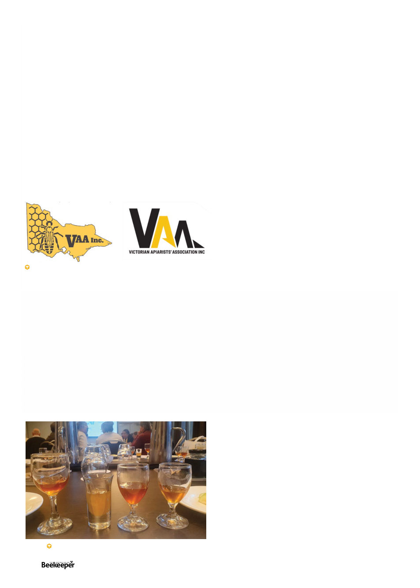

the other ones were had to greet each other cautiously like
we were in a secret society, which was funny. I’m one of
the two Senior VDOs for Victoria, which I think will benefit
from my role as ABK editor – it’s in everyone’s interest to
get everyone thoroughly educated on Varroa management
(though for the record and importantly, I am not speaking in
my official capacity as SVDO when writing in the magazine).
VAA proposed a logo change which was accepted by the
body. Also as is longstanding tradition at VAA conferences
to have some tedious procedural wrangling, there was
a dispute about whether they could proceed to “any
other business” which lasted much longer than it took to
determine once there that there was in fact no “any other
business” to consider (this shouldn’t be taken to reflect
poorly on the leadership, who handled the inane objection
very professionally).
And then there was the usual final dinner at which
everyone had a grand old time.
Western Australa / Asian Apiculture Association -
beekeeping, and then Friday was more focused on Varroa
and biosecurity. I got the feeling in WA, even moreso
than had been in Tasmania, that while Varroa is a threat
they’re seriously concerned about it’s still a distant threat
and they not without reason feel they have some time
before it arrives. I think their apiary officers are a little
anxious about the vast amount of territory they must
watch against Varroa coming in. They also have a small
hive beetle infestation in the north and a small infestation
of red dwarf (Apis florea) bees on the Dampier Peninsula.
The infestation does not seem to be spreading from a tiny
area of a two kilometre radius but has thus far proved
difficult to entirely eradicate due to these bees living in
rough terrain and frequently moving. I was very alarmed
to learn that Euvarroa, A.florea’s native mite, has also
been known to jump to A.mellifera and reproduce even
more successfully than Varroa, so now I have yet another
thing to fear – I rather propose if that happens the prefix
be changed to Dysvarroa.
Noted Varroa expert Randy Oliver, whose articles we
regularly carry, spoke to the conference live via video
and took questions and I think that was very greatly
appreciated by the attendees. Rather than the usual
seated final dinner, the awards banquet was a sort of
elegant stand-up soiree, with some seating and tables
for those who really didn’t want to stand but mainly it
was a stand-and-mingle sort of event which was actually
a nice change of pace.
The next day there was a technical tour up to a
plantation of manuka (Leptospermum nitens, which is
not the famous L scoparium but one of the many other
Australian species with similar properties) – 600 hectares
of a planned 1100 have been planted thus far, entirely
for the honey crop. As I’m not sure I’d seen this famous
shrub previously I was interested to see it first-hand.
And finally my marathon of conferences was over!
Each one was very interesting and I met many people
and made some friends, especially among the other
people who were also attending most of the conferences
themselves. In fact, one of them, Mike Allerton, the
Amateur Beekeepers Australia biosecurity officer, I
was able to convince to add to this list of conference
summaries with his impressions of the New South Wales
conference I didn’t’ attend:
New South Wales - (as reported by Mike
Allerton)
The NSWAA was held in Wagga Wagga 23/24 May
and the Crop Pollinator’s Association conference the day
before. It was a busy week in Wagga Wagga with Tocal
also running two all day Varroa Workshops 21/22 May.
All events were well attended.
A group of South Australian beekeepers were there to
get a head start on the Varroa situation before Varroa
reaches them. They’re hopeful that they’ll have another
season mite free, but resigned to the inevitable. They
also hope that more treatment options will be available
by then.
Most beekeeper conversations tended to focus around
Varroa controls with one supplier in the vendors hall
providing information and equipment for alternative
treatments not yet registered.
Honey sommelier class at the WA conference.
Victorian Apiarist Association’s old and new logo. The
new logo consists of the letters VAA in the general shape
of Victoria in black and yellow.
June 12th - 14th
This year the Western Australian conference was held
in conjunction with the Asian Apiculture Association’s
17th biannual conference. It was held in the elegant
Esplanade Hotel in Fremantle, and over the three days
had 300 attendees from 7 countries. In particular among
the exhibitors Chinese equipment manufacturers were
well represented.
The first day was dedicated to apitherapy. I learned
that apparently bee venom is one of the few treatments
for Lyme Disease, and that stinging is apparently also
efficacious against Parkinson’s Disease, and that royal
jelly has insulin-like properties that make it useful against
type 2 diabetes.
The second day was dedicated to more general
22 |
Celebrating 125 years | Vol. 126 | No. 01